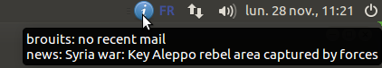

Nall! a simple, non-intrusive, everything notifier in the system tray
Nall is a small gtk+ application that discretely fits into your freedesktop system tray (such as trayer, stalonetray, gnome-panel, ...). Its purpose is to spawn periodically every kind of script and display a one-line output in the tooltip window. The main usage of nall is monitoring or just notifying of almost everything (it just depends upon your imagination and ability to script).
Why nall ? because i wanted to notify myself in a simple way some networked drives, plus check my emails and know the title of the music i was listening to on my last.fm radio. The genericity of nall allow you to use also Nagios Plugins to monitor various resources.
Nall should run on any POSIX operating system, having a freedesktop aware trayer.
Screenshot
screenshot 1:

nall hosted by the trayer, telling i have no recent email, that my server is alive, and that i'm listening to Richard Wagner's music.
screenshot 2:

the configuration box, accessible through the tray icon menu. This one displays 3 scripts to spawn periodically.
screenshot 3:

a script property: this script is a shell script located in ~/.nall
screenshot 4:

another script property: this one is a simple one-line (sh) command with a pipe.
Download
Nall is free software, released under the GNU GPL version 2. See the COPYING file in the source archive.
If you want to contribute (provide scripts, package it, edit a manpage...), don't hesitate to!
just download it an hack at your pleasure, then send me your commits.
Well, nall has a git repository where everybody can easily get the latest version and contribute to it. And even if you don't develop in C, you can add to the project your own nall scripts (nagios-plugins wrappers, USB teapot probe, rss checker...) and docs! For the latest changelog, browse nall code on github. To configure the github version, use the bootsrap.sh script instead of the usual configure script.
How to install it
You will need the development files of libgtk+2.0, libglib-2.0 and libnotify1 provided by your distro (this will also provide the pkg-config files). Untar the archive and go to its directory.
For Debian based distros, this resumes to:
$ sudo apt-get install build-essential libgtk2.0-dev libglib2.0-dev libnotify-dev
$ tar -zxf nall-1.0.tar.gz
$ cd nall-1.0
$ ./configure --prefix=/usr #or defaults to /usr/local/bin
$ make && make install
Example script
Note that nall won't run alone: you must provide it some scripts either as command-lines in the configuration box, either as executable files e.g. in the ~/.nall directory, and set their path in the configuration box.
A nall script must return only one line of output, if possible.
Here is an example of script that checks emails through an IMAP server:
$ cat ~/.nall/imap.sh
#!/bin/sh
{
echo X login brouits secretpass
sleep 1
echo X select inbox
sleep 1
echo X logout
} | telnet imap.free.fr 143 2>/dev/null | grep RECENT | tail -1
Got it ? have fun!